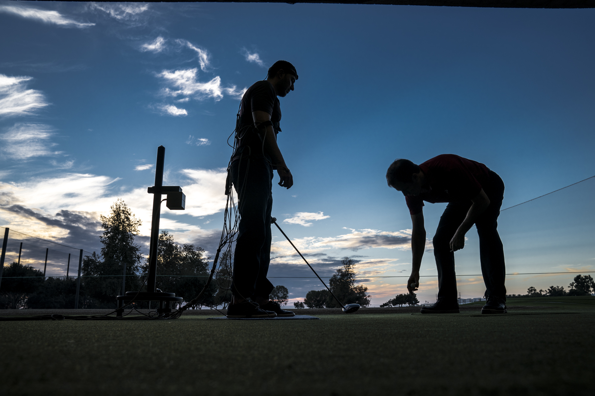

Your hips are the engine of your golf swing. When they move well, you create effortless rotation, store power in the backswing, and deliver it through the ball. When they're stiff, that power leaks out, and your body finds it somewhere else, usually at the cost of your lower back, knees, and consistency.
The frustrating part is that limited hip mobility is quiet. It rarely announces itself with pain at first. Instead it shows up as lost distance, a swing fault you can't fix on the range, or a back that aches after 18 holes. Below, we'll explain why your hips matter so much, what restriction actually costs you, and how a proper evaluation pinpoints exactly which part of the chain is holding you back.

Why Your Hips Drive the Swing
A great golf swing is a rotational, ground-up movement. Power starts from the ground, travels through your hips, and transfers up the chain into the club. Your hips do three big jobs in that sequence:
- 01 They create rotation. Turning into the backswing and clearing through impact both depend on the hips rotating freely, in both directions. Less hip turn means less coil, and less coil means less speed.
- 02 They generate power. The glutes and hips are your biggest engine for producing force. If they can't move through their full range, you simply can't access that power, no matter how hard you swing.
- 03 They stabilize the chain. Good hips don't just move, they control. Stable hips let your spine and knees stay in safe, efficient positions instead of absorbing stress they weren't built for.
What Limited Hip Mobility Costs You
When a hip can't do its job, your body doesn't quit, it compensates. Those compensations are exactly what golfers and coaches see as swing faults, and what bodies feel as pain. Common signs your hips are the limiting factor:
- Lost distance that no swing tip seems to fix
- Early extension (standing up out of posture) or sliding/swaying instead of rotating
- Lower back pain from your spine over-rotating to make up for stiff hips
- Knee discomfort as the knee absorbs twisting forces the hip should handle
- Feeling "stuck" or blocked at the top of the backswing or through impact
A stiff hip doesn't stay quiet. The swing fault you're fighting and the back pain you're managing are often the same problem, showing up in two places.
Why "Just Do Hip Stretches" Often Falls Short
Search "hip mobility for golf" and you'll get the same handful of stretches. Sometimes they help. But "hip mobility" isn't one thing, and that's why generic routines so often disappoint. Your hip rotates internally and externally, flexes and extends, and the limitation that matters for your swing might be only one of those, in only one hip.
On top of that, a hip can feel tight because it's genuinely restricted, or because it's unstable and your body is guarding it. Those two problems look identical on the range but need opposite solutions. Stretching an already-unstable hip can make things worse. Without an assessment, you're guessing which problem you have, and guessing is how golfers spend months on drills that were never going to work.
How a Golf PT Evaluation Finds the Real Restriction
A real evaluation looks at how your hips move, how they connect to your swing, and what's actually driving the limitation. Here's what that involves at Elite Golf PT:
A Full Movement Screen
Using the TPI Medical Level 3 screen, we measure your hip rotation, hinge, and stability and score each one, so we can see exactly where your range falls short and how it compares side to side.
Mobility vs. Stability
Through Gray Institute Applied Functional Science, we determine whether a tight-feeling hip is truly restricted or unstable and guarded, the single most important distinction for choosing the right plan.
Connecting It to Your Swing
We tie each finding back to what you actually feel on the course, the lost distance, the early extension, the achy back, so you understand the direct line from your hips to the ball.
Hands-On Examination
As doctors of physical therapy, we assess the hip joint, surrounding tissue, and strength directly, confirming the root cause rather than guessing at it from a generic routine.


What You'll Walk Away With
A Real Diagnosis
Exactly how your hips move, screened and scored, not a guess.
The Root Cause
Whether it's mobility, stability, or strength driving your swing fault.
A Specific Plan
Targeted work built for your hips and your swing, mapped session by session.
When to Get Evaluated
It's worth getting assessed if any of these sound familiar:
- You've lost distance and no swing change seems to bring it back
- You keep fighting the same fault (early extension, sway, slide) on the range
- Your back or knees ache during or after a round
- You've tried hip stretches with little or no lasting change
Note: This article is for general education and isn't a substitute for an individualized medical evaluation. If you have significant or persistent pain, please consult a qualified healthcare provider.